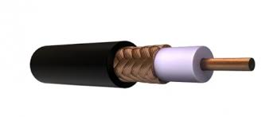
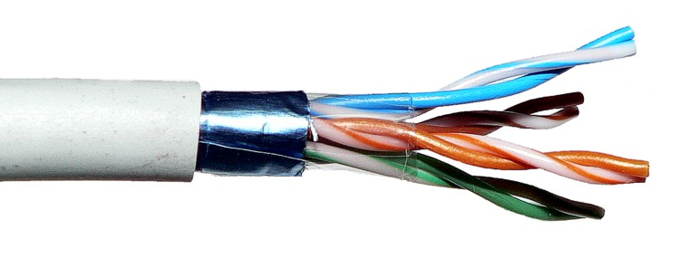

Redes de computadoras
¿Qué es una red de ordenadores?
Una red de computadoras es un conjunto de dispositivos interconectados que pueden compartir información y recursos. Se pueden conectar mediante cables, señales, ondas o cualquier otro método de transporte de datos.
|
Tipos de redes

Clasificación de redes de computadoras por alcance:
Red de Área Personal (PAN): Conecta dispositivos cerca de una persona, como un teléfono y un portátil.
Red de Área Local (LAN): Conecta dispositivos en un área pequeña, como una oficina o un edificio.
Red de Área Metropolitana (MAN): Conecta dispositivos en una ciudad o área metropolitana.
Red de Área Amplia (WAN): Conecta dispositivos en un área geográfica grande, como un país o el mundo.
Red de Área de Almacenamiento (SAN): Conecta dispositivos de almacenamiento de datos
Topologias de redes

Las topologías de red de computadoras definen la disposición física y lógica de los nodos y enlaces en una red, pudiendo ser de tipo bus, estrella, anillo, malla, árbol o híbrida, entre otras.
Topología en Bus:
Todos los dispositivos se conectan a un cable central (bus).
Ventajas: Simple y económica para redes pequeñas.
Desventajas: El fallo en el cable principal afecta a toda la red.
Topología en Estrella:
Cada dispositivo se conecta a un conmutador central (hub o switch).
Ventajas: Fácil de diagnosticar y escalar.
Desventajas: Dependencia del conmutador central.
Topología en Anillo:
Los dispositivos se conectan formando un círculo, pasando la información de uno a otro.
Ventajas: Simple y eficiente para la transmisión de datos.
Desventajas: El fallo en un enlace interrumpe toda la red.
Topología en Malla:
Cada dispositivo se conecta a varios otros, creando múltiples rutas.
Ventajas: Alta redundancia y resistencia a fallos.
Desventajas: Costosa y compleja de implementar.
Topología en Árbol:
Una topología en estrella con conexiones adicionales formando ramas.
Ventajas: Escalable y adaptable.
Desventajas: Dependencia del nodo central.
Topología mixta: también conocida como topología híbrida, es una red que combina dos o más topologías de red. El resultado es una red que no se ajusta a ninguna de las topologías estándar.
Topología totalmente conectada: es una red en la que todos los nodos están conectados entre sí. También se le conoce como topología de malla completa o topología completa.
Medios de transmision
Alambricos
Cable coaxial
coaxcable o coax, es un cable utilizado para transportar señales eléctricas de alta frecuencia que posee dos conductores concéntricos, uno central, llamado núcleo, encargado de llevar información, y uno exterior, de aspecto tubular, llamado malla, blindaje o trenza, que sirve como referencia de tierra y retorno de las corrientes. Entre ambos se encuentra una capa aislante dieléctrica, de cuyas características dependerá principalmente la calidad del cable. Todo el conjunto suele estar protegido por una cubierta aislante (también denominada camisa exterior).
El cable coaxial tiene las siguientes características:
Está compuesto por capas concéntricas de conductores y material aislante.
El conductor central es un cable delgado de cobre sólido o trenzado.
Tiene una cubierta externa que reduce las emisiones eléctricas.
Su forma es redonda debido a la capa de aislamiento interior.
Los tamaños más habituales son RG-6, RG-11 y RG-59.
Están disponibles en una variedad de colores.
Ventajas:
Más económico y ampliamente disponible.
Compatible con tecnologías existentes, como televisión por cable.
Más fácil de instalar en áreas con infraestructura antigua.
Desventajas:
Su grosor limita su utilización en pequeños conductos eléctricos y en ángulos muy agudos.
La alta atenuación del cable flexible limita su utilidad a distancias cortas.

Cable de par trenzado
El cable de par trenzado consiste en grupos de hilos de cobre entrelazados en pares en forma helicoidal. Esto se hace porque dos alambres paralelos constituyen una antena simple. Cuando se entrelazan los alambres helicoidalmente, las ondas se cancelan, por lo que la interferencia producida por los mismos es reducida lo que permite una mejor transmisión de datos.
Características:
Los hilos conductores están aislados
Los hilos conductores se cruzan entre sí
Los hilos conductores discurren en paralelo
Los cables trenzados se suelen especificar con dos números: el primero representa la cantidad de hilos y el segundo, el calibre
Los cables trenzados pueden conducir líneas balanceadas
Ventajas:
Su costo en comparación con otros es bajo
Tiene un número alto de estaciones de trabajo para cada segmento
Tiene una facilidad para el rendimiento y solucionar problemas
Es fácil de instalar y manejar debido a su flexibilidad
Desventajas:
Es más susceptible a las interferencias electromagnéticas (EMI) y de radiofrecuencia (RFI) en comparación con los cables apantallados
Puede verse afectado por interferencias electromagnéticas de otros cables o dispositivos
Tiene un ancho de banda menor, lo que lo limita para aplicaciones que demandan grandes velocidades de transmisión

Fibra optica
La fibra óptica es una fibra flexible, transparente, hecha al embutir o extrudir vidrio (sílice) en un diámetro ligeramente más grueso que el de un cabello humano promedio.Son utilizadas comúnmente como un medio para transmitir luz entre dos puntas de una fibra y tienen un amplio uso en las comunicaciones por fibra óptica, donde permiten la transmisión en distancias y en un ancho de banda (velocidad de datos) más grandes que los cables eléctricos.
Características:
Ancho de banda: Puede enviar millones de bits por segundo (bps).
Atenuación de señal: Baja atenuación de la señal.
Seguridad: Es difícil interceptar sus transmisiones.
Inmunidad a interferencias: No le afectan las interferencias electromagnéticas.
Resistencia: Es resistente a los cambios de temperatura y a las condiciones meteorológicas adversas.
Velocidad: Es rápida y tiene baja latencia.
Capacidad: Puede albergar grandes cantidades de datos.
Funcionamiento:
Se basa en transmitir un haz de luz por el núcleo de la fibra.
La luz se refleja y se propaga dentro de la fibra.
El índice de refracción del núcleo debe ser mayor al del revestimiento.
Inalambricos
Wifi
Wi-Fi es una tecnología que permite conectar dispositivos electrónicos de forma inalámbrica. Se basa en ondas de radio para transmitir datos entre dispositivos, sin necesidad de cables.
Algunas de sus características son:
Inalámbrico: No requiere cables para conectar dispositivos.
Alcance: Depende de la intensidad de la señal, la cercanía al emisor y las interferencias.
Velocidad: La velocidad de transmisión depende del router y la conexión.
Seguridad: Requiere contraseñas y otros mecanismos de seguridad para proteger la privacidad de los usuarios.
Flexibilidad: Permite acceder a la red desde diferentes ubicaciones sin necesidad de cables.
Interferencia: Minimiza la interferencia y mantiene una señal estable.
Cobertura: La red puede cubrir áreas extensas, desde hogares y oficinas hasta áreas urbanas enteras.
Bluetooth
Bluetooth es una tecnología inalámbrica que permite que dispositivos se comuniquen entre sí sin necesidad de cables. Se utiliza para conectar dispositivos como audífonos, teclados, ratones, y altavoces a computadoras y dispositivos móviles.
Sus características principales son:
Transmisión de corto alcance: Utiliza ondas de radio en la banda de 2,4 GHz.
Comunicación automática: Favorece la comunicación sin necesidad de que el usuario la inicie.
Bajo consumo de energía: Se adapta al uso adecuado de la energía de los dispositivos.
Transmisión omnidireccional: No requiere línea de vista.
Seguridad: Utiliza Spread Spectrum Frequency Hopping para disminuir el riesgo de interferencias.
Establecimiento de redes: Puede formar redes en una topología punto-a-punto o punto-a-multipunto.
Para conectar dos dispositivos Bluetooth, ambos deben ser compatibles con el mismo perfil. Al conectarlos por primera vez, se realiza un proceso de emparejamiento o asociación.
Wimax
WiMAX, que significa Worldwide Interoperability for Microwave Access (Interoperabilidad Mundial para Acceso por Microondas), es una tecnología de banda ancha inalámbrica que permite conexiones de internet de alta velocidad, especialmente útil en áreas donde la fibra óptica o el cableado tradicional no llegan.
Entre sus características se encuentran:
Alcance: Puede alcanzar distancias de hasta 70 km.
Velocidad: Puede alcanzar velocidades de hasta 70 Mbps, dependiendo de la limpieza del espectro.
Frecuencias: Utiliza frecuencias portadoras menores a 11 GHz, como 2.3 GHz, 2.5 GHz, 3.5 GHz y 5.7 GHz.
Transmisión: Utiliza la técnica OFDM, que es eficiente en el uso de los recursos de radio.
Facilidades de expansión: Permite añadir más canales, dependiendo de la regulación de cada país.
Anchos de banda: Los anchos de banda son configurables y no cerrados.
Soporte de servicios: Soporta servicios de Multicast y broadcast (MBS).
Soporte de calidad de servicio: Soporta calidad de servicio (QoS).
WiMAX es una alternativa para zonas rurales sin cableado convencional. Permite una instalación rápida y conexiones de alta velocidad y baja latencia.